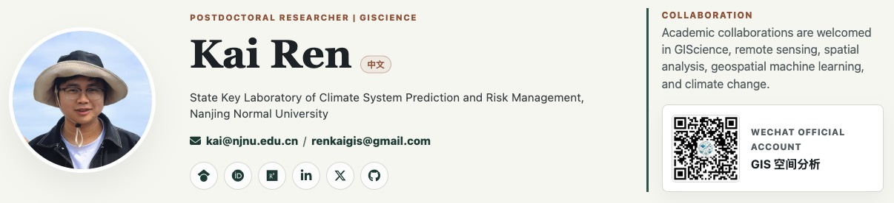

Latest
Recent Updates
Why I Keep a GIScience Notebook
A short reflection on keeping track of methods, field observations, academic conversations, and small ideas before they become research questions.
Two 2025 Papers and One Spatial Prediction Thread
Notes on two first-author papers, from second-dimension outliers to wheat production disparities, and the research thread connecting them.
From Perth to Wheat Production: Notes after IPC2025
Reflections on presenting a geospatial machine learning study at IPC2025 and the conversations that followed around agriculture, uncertainty, and spatial evidence.
Working Behind the Scenes at ISPRS TC IV 2024
A short note on conference service, hallway conversations, and what large geospatial meetings reveal about the field.